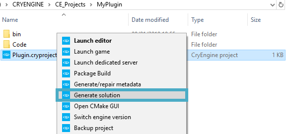
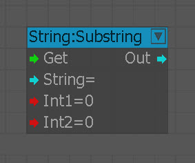

Обзор
В CRYENGINE можно создать собственный узел Flow Graph, используя C++ для создания файла .dll, который можно представить в CRYENGINE как плагин. Этот метод предлагает еще одно решение для пользователей, которые предпочитают создавать собственный узел без необходимости создавать его с нуля. Для получения дополнительной информации о создании узла Flow Graph см. Создание нового узла потока раздел.
Предварительные условия
Следующие приложения необходимо будет установить для компиляции проектов и самого движка.
Имя | Минимальная версия | Последняя поддерживаемая версия | Примечания |
|---|---|---|---|
| Visual Studio | 2015 (все выпуски), компилятор vc140 | 2017 (все выпуски), компилятор vc141 | |
| Windows SDK | 10.0.15063.0 | 10.0.15063.0 | В ранних установках Visual Studio 2015 вместо этого могла быть установлена версия 10.0.10150.0. Обратите внимание, что вам необходимо перезагрузить компьютер после установки Windows SDK, прежде чем пытаться скомпилировать движок. |
| CMake | 3.6 | 3.9 |
Шаги
Создайте Плагин CPP проект и откройте папку проекта.
Подробную информацию о создании проекта см. Создание, импорт и обновление проектов страница.Файлы проекта хранятся отдельно от движка. А .cryproject файл будет сгенерирован для вас; его можно щелкнуть правой кнопкой мыши, чтобы открыть вспомогательные функции, или открыть в текстовом редакторе, чтобы открыть JSON с подробным описанием проекта.Далее в папке проекта щелкните правой кнопкой мыши на Плагин.cryproject файл и выберите Создать решение;

Перейдите к созданному файлу решения и откройте Plugin.sln файл; например: \MyProject\solutions\win64\Plugin.slnВ обозревателе решений откройте проект\Плагин\Plugin.cpp и вставьте класс и макрос, показанные ниже, непосредственно перед последней строкой блока кода, который CRYREGISTER_SINGLETON_CLASS(CPlugin):
// This is the class that is going to be registered by the REGISTER_FLOW_NODE macro at the bottom class CFlowSubstringNode : public CFlowBaseNode<eNCT_Singleton> { public: CFlowSubstringNode(SActivationInfo* pActInfo) {}; virtual void GetConfiguration(SFlowNodeConfig& config) { static const SInputPortConfig in_config[] = { InputPortConfig_Void("Get", _HELP("Substring, retrieves letters from defined string.")), InputPortConfig<string>("String", _HELP("String to retrieve letters from")), InputPortConfig<int>("Int1", _HELP("Start retrieving from")), InputPortConfig<int>("Int2", _HELP("Number of letters to retrieve")), { 0 } }; static const SOutputPortConfig out_config[] = { OutputPortConfig<string>("Out"), { 0 } }; config.sDescription = _HELP("Substring"); config.pInputPorts = in_config; config.pOutputPorts = out_config; config.SetCategory(EFLN_APPROVED); } virtual void ProcessEvent(EFlowEvent evt, SActivationInfo* pActInfo) { switch (evt) { case eFE_Activate: if (IsPortActive(pActInfo, 0)) { string str1 = GetPortString(pActInfo, 1); int int1 = GetPortInt(pActInfo, 2); int int2 = GetPortInt(pActInfo, 3); if (int1 + int2 > str1.length()) { CryWarning( VALIDATOR_MODULE_FLOWGRAPH, VALIDATOR_WARNING, "Failed to get %d characters starting from %d in a string %d characters long.", int2, int1, str1.length()); } ActivateOutput(pActInfo, 0, str1.substr(int1, int2)); } break; } }; virtual void GetMemoryUsage(ICrySizer* s) const { s->Add(*this); } }; //Register Flownode (you will need to do this for every FlowNode once) //The REGISTER_FLOW_NODE Macro takes 2 parameters, the name as first and the class as second parameter. REGISTER_FLOW_NODE("String:Substring", CFlowSubstringNode)В этом примере узел будет называться Строка:Подстрока, как указано в последней строке приведенного выше блока кода.
Последняя строка этого блока должна быть CRYREGISTER_SINGLETON_CLASS(CPlugin).Скопировав код, перейдите в раздел Plugin.h → CPlugin класс в обозревателе решений и вставьте следующие две строки внизу раздела public:
PLUGIN_FLOWNODE_REGISTER
PLUGIN_FLOWNODE_UNREGISTER
Когда процесс завершится, блок кода должен выглядеть следующим образом:
#pragma once #include <CrySystem/ICryPlugin.h> #include <CryGame/IGameFramework.h> #include <CryEntitySystem/IEntityClass.h> class CPlugin : public Cry::IEnginePlugin , public ISystemEventListener { public: CRYINTERFACE_SIMPLE(Cry::IEnginePlugin) CRYGENERATE_SINGLETONCLASS_GUID(CPlugin, "MyPlugin", "2711a23d-3848-4cdd-a95b-e9d88ffa23b0"_cry_guid) virtual ~CPlugin(); // Cry::IEnginePlugin virtual bool Initialize(SSystemGlobalEnvironment& env, const SSystemInitParams& initParams) override; // ~Cry::IEnginePlugin // ISystemEventListener virtual void OnSystemEvent(ESystemEvent event, UINT_PTR wparam, UINT_PTR lparam) override; // ~ISystemEventListener //Include Flownode Registering and unregistering (just needs to be included once in total) PLUGIN_FLOWNODE_REGISTER PLUGIN_FLOWNODE_UNREGISTER };Эти две строки гарантируют, что узел Flow Graph зарегистрирован/не зарегистрирован, и их нужно включить только один раз.
Убедившись в правильности позиции кода, перейдите к следующим шагам:- Построить решение, выбрав Сборка → Сборка решения в строке меню Visual Studio. Это создаст файл .dll в MyPlugin\bin\win_x64 папка;
- Копировать этот файл .dll в \bin\win_x64 папка любого существующего проекта CRYENGINE, в котором вы хотите использовать свой плагин.
В этом примере используется проект GameSDK, поэтому файл .dll копируется в \GameSDK\bin\win_x64; Щелкните правой кнопкой мыши на тот GameSDK.cryproject файл и Редактировать это в текстовом редакторе добавьте следующую ссылку на файл .dll в разделе плагинов; имейте в виду, что приведенный ниже ссылочный код может отличаться в зависимости от пути проекта. мусорное ведро папка:
{
"type": "EPluginType::Native",
"путь": "bin/win_x64/plugin.dll"
}.Если новая строка не является последней строкой плагина, убедитесь, что она заканчивается символом запятая.Открыть тот GameSDK.cryproject файл в редакторе Sandbox. Затем перейдите к Flow Graph, чтобы использовать новый узел;

Вы также можете использовать визуальные панели для передачи соответствующей информации, советов или вещей, о которых пользователям следует знать.